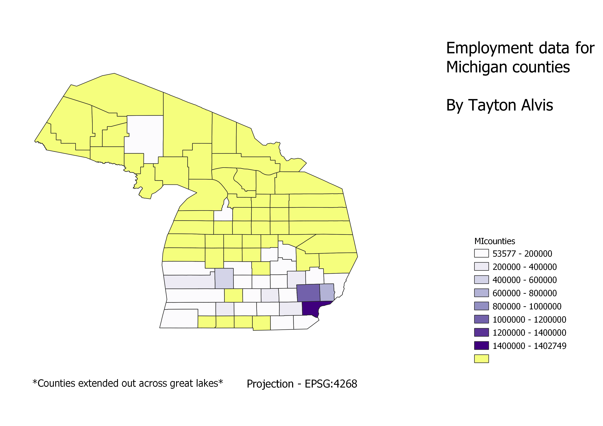

Homework 6: Census data choropleth
Tayton Alvis
Map showing number of employed persons aged 16 and over in various Michigan counties. Darker color correlates to larger value as demonstrated by map legend. Yellow counties were not included in dataset. Map was in 4268 Michigan state projection.

Data used for this project
CSV dataset
Link to shapefile